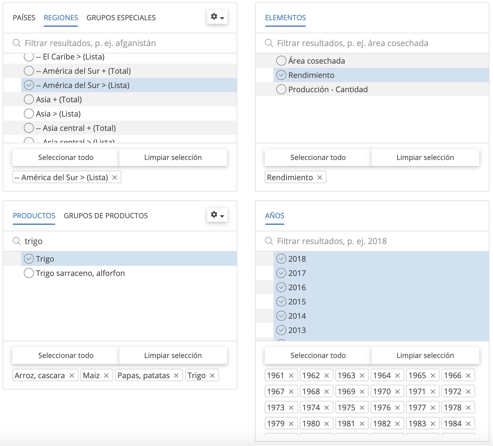

Un post replicable para extraer y ordenar datos FAOSTAT con el paquete Tidyverse. Se presenta un análisis comparativo de paises latinoamericanos en función al rendimiento de los cultivos mas consumidas por la humanidad.
Extraer, ordenar y graficar datos es una tarea que demanda tiempo y cierta habilidad informática. Generalmente, muchos investigadores buscamos datos históricos para observar tendencias de rendimiento, producción y superficie cultivada, esto con el propósito de soportar diferentes investigaciones del área. Para realizar estas tareas existen diferentes bases de datos de libre acceso, entre ellos está FAOSTAT. Esta organización proporciona acceso libre a datos sobre alimentación y agricultura de más de 245 países y 35 regiones, desde 1961 hasta el año más reciente disponible.
Los datos de FAOSTAT habitualmente son descargados en planillas de Microsoft Excel y en ésta se va limpiando de forma manual hasta que el resumen de datos sea presentable. Esta actividad requiere tiempo; sin embargo, existen herramientas de programación que pueden automatizar este proceso y reducir tiempo en ordenar datos. Una de ellas es R, la cual es un lenguaje de programación y un ambiente de software libre para la ciencia de datos. Por tanto, nuestro objetivo es extraer y ordenar datos de la página web de FAOSTAT con el uso del paquete Tidyverse en el ambiente R.
Para acceder a FAOSTAT, diríjase al sitio web oficial a traves del enlace http://www.fao.org/faostat/en/#home. En la página principal tiene la opción de cambiar el idioma del ingles al español y haga clic en Acceder a los datos. Una vez que acceda a esta ventana, haga clic en cultivos en la sección de Producción, en la cual observará la vista de selección y descargar datos. En esta ventana seleccionamos la base de datos a descargar. Para esto siga los siguientes pasos:

regiones y elegimos los países de América del Sur.elementos puede seleccionar Área cosechada (superficie cultivada), Rendimiento y Producción. Para nuestro ejemplo elegimos rendimiento.productos de interes. En nuestro caso elegimos cuatro cultivos (arroz, maíz, papa y trigo).Años de interes. Para nuestro ejemplo elegimos todos los años, esto con el propósito de hacer comparación de la tendencia de rendimiento en los países de latinoamérica.descargar los datos seleccionados. Para esto, la salida de datos debe estar seleccionado en formato Tabla, tipo de archivo CSV y hacer clic en Descargar Datos para guardar en un archivo de proyecto.A partir de esta etapa se usará la consola de R a traves del entorno RStudio. Para ordenar los datos es recomendable usar el paquete tidyverse, la cual es una colección obstinada de paquetes R diseñados para la ciencia de datos. Para instalar use este código install.packages("tidyverse").
Para proceder con la ordenación de datos, analizar y/o generar otro tipo de actividades con R, recomiendo crear un proyecto a traves de RStudio. Esto facilita el flujo de trabajo dentro de R. Posterior a ello, llame al paquete tidyverse:
Para iniciar con el trabajo es necesario que los datos descargados de FAOSTAT se encuentre dentro de los archivos del proyecto.
Para llamar los datos al entorno de R use la siguiente función:
key_crops <- read_csv("FAOSTAT_data_11-18-2020.csv")
Para verificar el marco de datos en el ambiente R, ejecute la variable key_crops.
key_crops
# A tibble: 2,657 x 14
`Domain Code` Domain `Area Code` Area `Element Code` Element
<chr> <chr> <dbl> <chr> <dbl> <chr>
1 QC Crops 9 Argentina 5419 Yield
2 QC Crops 9 Argentina 5419 Yield
3 QC Crops 9 Argentina 5419 Yield
4 QC Crops 9 Argentina 5419 Yield
5 QC Crops 9 Argentina 5419 Yield
6 QC Crops 9 Argentina 5419 Yield
7 QC Crops 9 Argentina 5419 Yield
8 QC Crops 9 Argentina 5419 Yield
9 QC Crops 9 Argentina 5419 Yield
10 QC Crops 9 Argentina 5419 Yield
# … with 2,647 more rows, and 8 more variables: Item Code <dbl>,
# Item <chr>, Year Code <dbl>, Year <dbl>, Unit <chr>, Value <dbl>,
# Flag <chr>, Flag Description <chr>En esta salida puede observar 2657 filas u observaciones y 14 columnas o variables. Asimismo, puede verificar los formatos de cada variable. Esta base de datos no facilita el uso apropiado para realizar un resumen descriptivo o generar gráficas para observar tendencias.
Para este proceso se identificó que la columna de Area contiene países de América del Sur; sin embargo, en estas obsevarciones Bolivia tiene texto adicional “Bolivia (Plurinational State of)”. Para eliminar el texto adicional se usa la función separate(Area, c("country"), sep = " "), el mismo proceso se aplica para Rice, paddy en la columa de cultivos Item. A partir de la columna Value se creó otra columna mutate(yield = Value / 10000), en la cual se hizo la conversión de hectogramos (hg ha-1) a toneladas (t ha-1). El siguiente paso fue seleccionar cuatro variables de la base de datos select(country, crop, Year, yield) y al finalizar este proceso se filtró los países más próximos a Bolivia.
Podemos observar los datos ordenados ejecutando long_crops
long_crops
# A tibble: 1,624 x 4
country crop Year yield
<chr> <chr> <dbl> <dbl>
1 Argentina Maize 1961 1.77
2 Argentina Maize 1962 1.89
3 Argentina Maize 1963 1.65
4 Argentina Maize 1964 1.80
5 Argentina Maize 1965 1.68
6 Argentina Maize 1966 2.15
7 Argentina Maize 1967 2.47
8 Argentina Maize 1968 1.94
9 Argentina Maize 1969 1.93
10 Argentina Maize 1970 2.33
# … with 1,614 more rowsEstos datos tienen 1624 filas y 4 columnas, las cuales estan ordenadas y listas para generar gráficas interactivas o estáticas.
Generar gráficas es muy importante, ya que es más cómodo interpretar, analizar tendencias o identificar asociaciones. Debido a ello, se realizó una figura multipanel.
En la figura, se observa tendencias de rendimiento a traves del tiempo que corresponden para los cuatro cultivos. Por ejemplo, el rendimiento de papa en Argentina tiende a incrmentar 10 t ha-1 cada 20 años; sin embargo, en Bolivia las tendencias de rendimiento son constantes o sea no hay un incremento pronunciado a compararación de los países vecinos.
También se puede realizar una gráfica para el último año. Para ello, se filtró el año 2018 de la base de datos long_crops con la función filter(Year == 2018). Con estos datos, se generó una gráfica de barras.
yearfs <- long_crops %>%
filter(Year == 2018)
# seleccion de tema para la gráfica
theme_set(
theme_classic() +
theme(legend.position = "top")
)
#Generando gráfica de barras
p1 <- ggplot(yearfs, aes(x=country, y=yield, fill=crop)) +
geom_bar(stat="identity", position = position_dodge()) +
labs(x = "Países", y = "Yield (t ha)")
fig <- ggplotly(p1)
fig
En esta figura se puede observar rendimientos de cuatro cultivos para el año 2018. En la cual, Argentina, Chile y Brasil tuvieron mayores rendimientos en el cultivo de papa; sin embargo, Bolivia se ubica en el último puesto en cuanto a rendimientos en los cuatro cultivos.
Los usuarios de R pueden generar scripts reproducibles a base de este post. Extraer, ordenar y graficar datos con R, facilita obtener datos limpios y es más eficiente con los tiempos de trabajo.
For attribution, please cite this work as
Santos (2020, Nov. 30). Franklin Santos: Extraer y ordenar datos FAOSTAT con Tidyverse. Retrieved from https://franklinsantos.com/posts/2021-03-14-tidyfaostat/
BibTeX citation
@misc{santos2020extraer,
author = {Santos, Franklin},
title = {Franklin Santos: Extraer y ordenar datos FAOSTAT con Tidyverse},
url = {https://franklinsantos.com/posts/2021-03-14-tidyfaostat/},
year = {2020}
}